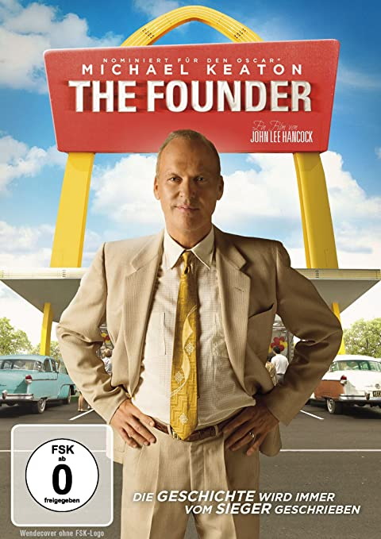

PLOT : The story of Ray Kroc, a salesman who turned two brothers' innovative fast food eatery, McDonald's, into the biggest restaurant business in the world, with a combination of ambition, persistence, and ruthlessness.
DIRECTOR : John Lee Hancock
WRITER : Robert Siegel
STARS : Michael Keaton, Nick Offerman, John Carroll Lynch